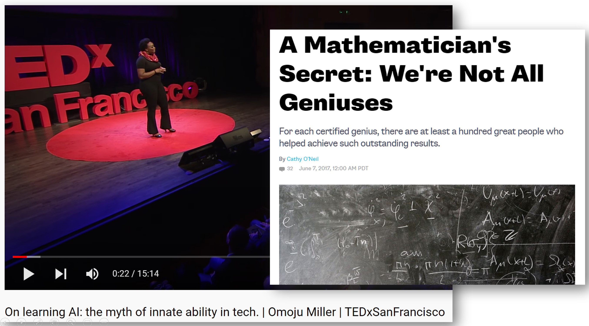
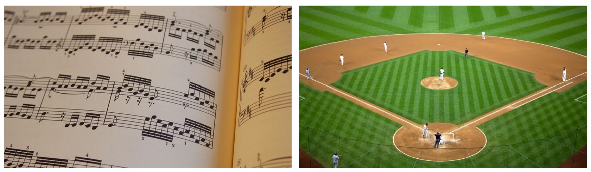
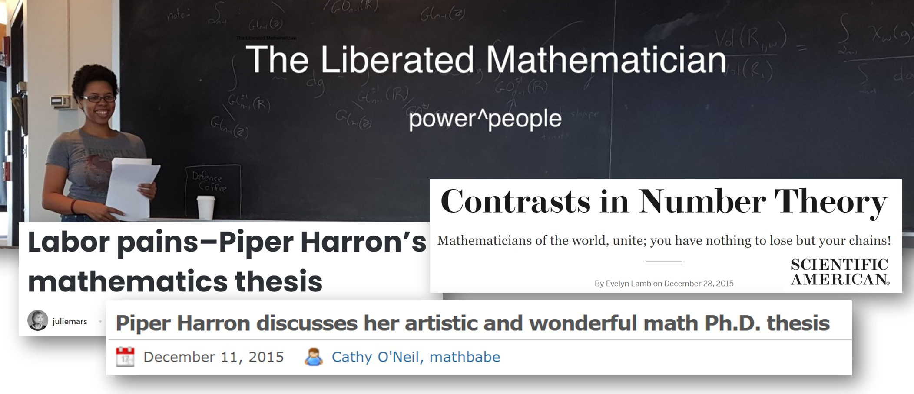

On the surface, I may seem into math: I have a math PhD, taught a graduate computational linear algebra course, co-founded AI research lab fast.ai, and even go by the twitter handle @math_rachel.
Yet many of my experiences of academic math culture have been toxic, sexist, and deeply alienating. At my lowest points, I felt like there was no place for me in math academia or math-heavy tech culture.
It is not just mathematicians or math majors who are impacted by this: Western culture is awash in negative feelings and experiences regarding math, which permate from many sources and impact students of all ages. In this post, I will explore the cultural factors, misconceptions, stereotypes, and relevant studies on obstacles that turn people off to math. If you (or your child) doesn’t like math or feels anxious about your own capabilities, you’re not alone, and this isn’t just a personal challenge. The below essay is based on part of a talk I recently gave.

Myth of Innate Ability, Myth of the Lone Genius
One common myth is the idea that certain people’s brains aren’t “wired” the right way to do math, tech, or AI, that your brain either “works that way” or not. None of the evidence supports this viewpoint, yet when people believe this, it can become a self-fulfilling prophecy. Dr. Omoju Miller, who earned her PhD at UC Berkeley and was a senior machine learning engineer and technical advisor to the CEO at Github, shares some of the research debunking the myth of innate ability in this essay and in her TEDx talk. In reality, there is no such thing as “not a math person.”
Dr. Cathy O’Neil, a Harvard Math PhD and author of Weapons of Math Destruction, wrote about the myth of the lone genius mathematician, “You don’t have to be a genius to become a mathematician. If you find this statement at all surprising, you’re an example of what’s wrong with the way our society identifies, encourages and rewards talent… For each certified genius, there are at least a hundred great people who helped achieve such outstanding results.”

Music without singing or instruments
Imagine a world where children are not allowed to sing songs or play instruments until they reach adulthood, after spending a decade or two transcribing sheet music by hand. This scenario is absurd and nightmarish, yet it is analogous to how math is often taught, with the most creative and interesting parts saved until almost everyone has dropped out. Dr. Paul Lockhart eloquently describes this metaphor in his essay, A Mathematician’s Lament, on “how school cheats us out of our most fascinating and imaginative art form.” Dr. Lockhart left his role as a university math professor to teach K-12 math, as he felt that so much reform was needed in how math is taught.
Dr. David Perkins uses the analogy of how children can play baseball wthout knowing all the technical details, without having a full team or playing a full 9 innings, yet still gain a sense of the “whole game.” Math is usually taught with an overemphasis on dry, technical details, without giving students a concept of the “whole game.” It can take years and years before enough technical details are accumulated to build something interesting. There is an overemphasis on techniques rather than meaning.

Math curriculums are usually arranged in a vertical manner, with each year building tightly on the previous, such that one bad year can ruin everything that comes after. Many people I talk to can pinpoint the year that math went bad for them: “I used to like math until 6th grade, when I had a bad teacher/was dealing with peer pressure/my undiagnosed ADHD was out of control. After that, I was never able to succeed in future years.” This is less true in other subjects, where one bad history teacher/one bad year doesn’t mean that you can’t succeed at history the following year.
Gender, race, and stereotypes
Female teachers’ math anxiety affects girls’ math achievement: In the USA, over 90% of primary school teachers are female, and research has found “the more anxious teachers were about math, the more likely girls (but not boys) were to endorse the commonly held stereotype that ‘boys are good at math, and girls are good at reading’ and the lower these girls’ math achievement… People’s fear and anxiety about doing math—over and above actual math ability—can be an impediment to their math achievement.”
Research across a number of universities has found that more women go into engineering when courses focus on problems with positive social impact.
Structural racism also impacts what messages teachers impart to students. An Atlantic article How Does Race Affect a Student’s Math Education? covered the research paper A Framework for Understanding Whiteness in Mathematics Education, noting that “Constantly reading and hearing about underperforming Black, Latino, and Indigenous students begins to embed itself into how math teachers view these students, attributing achievement differences to their innate ability to succeed in math… teachers start to expect worse performance from certain students, start to teach lower content, and start to use lower-level math instructional practices. By contrast, white and Asian students are given the benefit of the doubt and automatically afforded the opportunity to do more sophisticated and substantive mathematics.”
The mathematics community is “an absolute mess which actively pushes out the sort of people who might make it better”

Dr. Piper Harron made waves with her Princeton PhD thesis, utilizing humor, analogies, sarcasm, and genuine efforts to be accessible as she described advanced concepts in a ground-breaking way, very atypical for a mathematics PhD thesis. Dr. Harron wrote openly in the prologue of her thesis on how alienating the culture of mathematics is, “As any good grad student would do, I tried to fit in, mathematically. I absorbed the atmosphere and took attitudes to heart. I was miserable, and on the verge of failure. The problem was not individuals, but a system of self-preservation that, from the outside, feels like a long string of betrayals, some big, some small, perpetrated by your only support system.” At her blog, the Liberated Mathematician, she writes, “My view of mathematics is that it is an absolute mess which actively pushes out the sort of people who might make it better.”
These descriptions resonate with my own experiences obtaining a math PhD (as well as the experiences of many friends, at a variety of universities). The toxicity of academic math departments is self-perpetuating, pushing out the people who could make them better.
The full talk
This post is based on the first part of the talk I gave in the below video, which includes more detail and a Q&A. The talk also includes recommendations about math apps and resources, as well as a framework for how to consider screentime. Stay tuned for a future fast.ai blog post covering math apps and screentime.